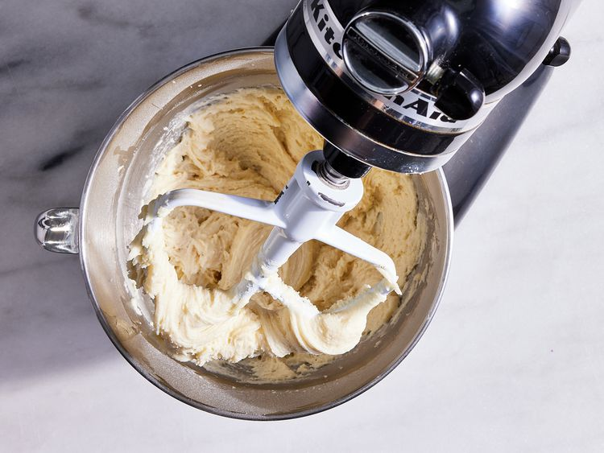
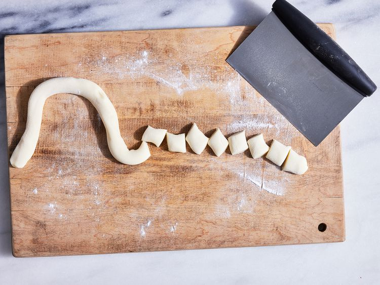
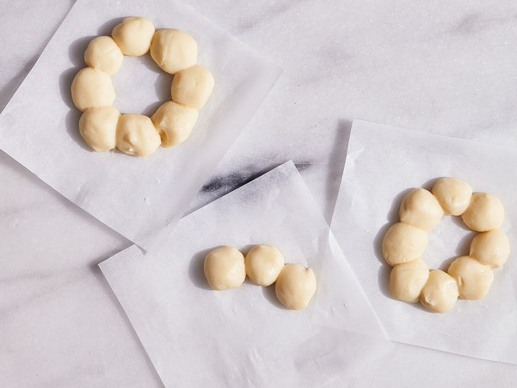
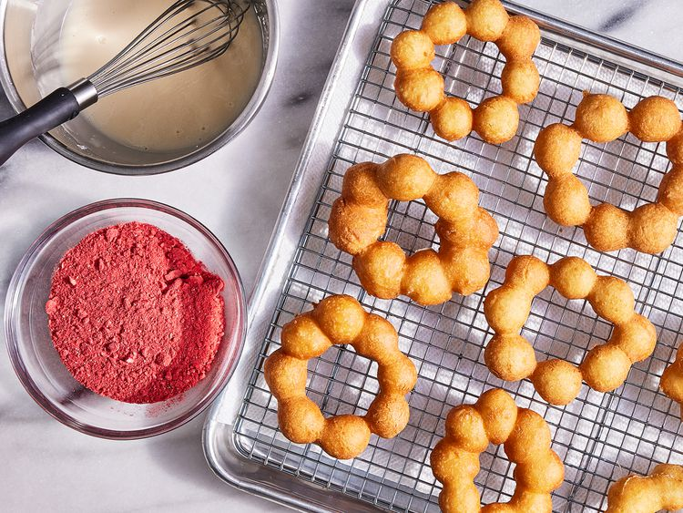
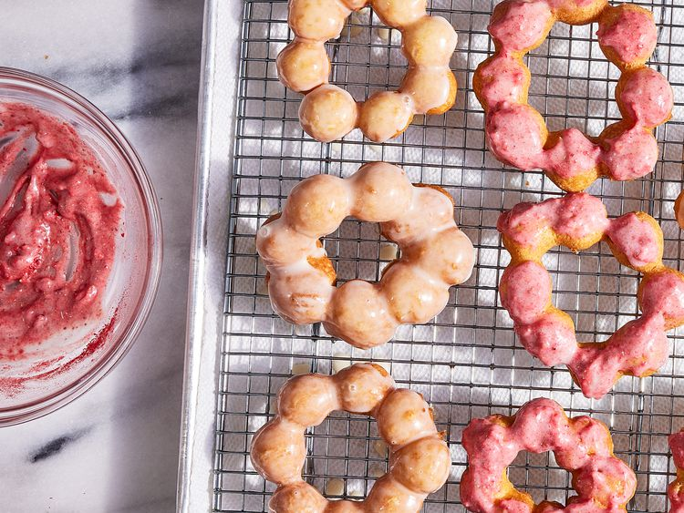

These homemade Mochi Donuts are crispy on the exterior with a light, fluffy interior, which maintains that mochi chew. They are not too sweet, which is how we like our donuts.
Here's a very brief overview of what you can expect when you make Mochi Donuts at home:

Lightly dust rice flour onto a clean work surface and turn dough onto surface. Divide dough into quarters and working in batches, roll dough quarters into 18-inch-long ropes about 1-inch wide.


Oil to a depth of 2 inches in a large Dutch oven; heat over medium-high to 350 F° (175 C°).
Place 3 dough rings, along with parchment, in hot oil. Remove parchment with tongs once dough floats to top of oil. Cook until golden and puffed, turning once halfway through, 2 to 3 minutes. Transfer to a wire rack lined with paper towels; cool 10 minutes. Repeat with remaining dough rings.
For the glaze whisk powdered sugar, 2 tablespoons milk, and vanilla together in a medium bowl. Mixture should be the consistency of heavy cream; add up to 1 tablespoon milk, 1 teaspoon at a time, as needed to adjust consistency. Dip tops of 4 or 5 doughnuts into the glaze; place on wire rack (with paper towel removed).

